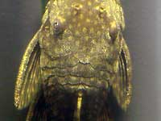

Ancistrus
Maybe the ancistrus has hair, or fur? On this photo scales are not seen clearly.
Ancisctrus can change its own color. Sometimes it becomes white spotted. Perhaps it occurs because of its mood or it is trying to mask on the background. Meanwhile scales are seen in proper light.

Ancistrus' scales